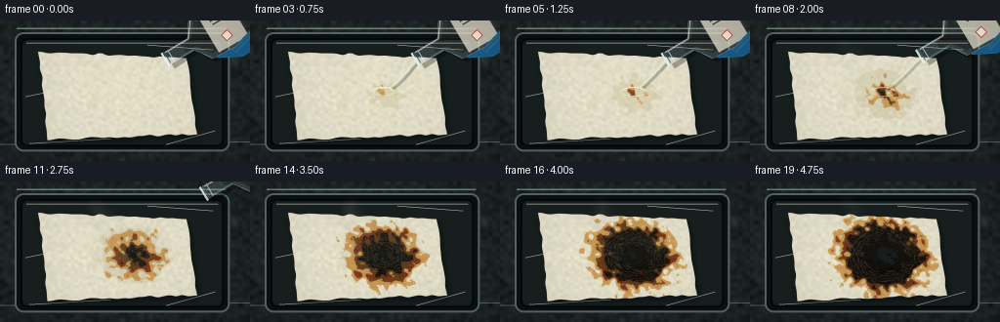
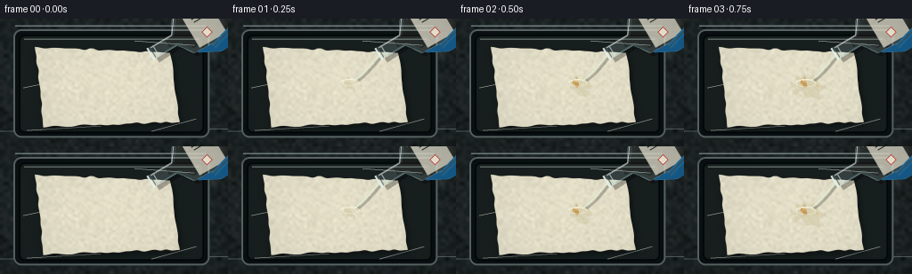

CODING AGENTS AS PIXEL WORLD MODELS
traex/GPT-5.6-Sol · phygen_153
点击播放 · 原生 RGB 像素
逐轮保存的候选
回放视频、检查图与代码变化。
每份候选均可单独播放。实际图片检查记录在下方工具轨迹中。
候选 01播放与检查图
点击播放 · 原生 RGB 像素


展开代码变化
--- 上一保存版本
+++ 本次保存版本
@@ -0,0 +1,300 @@
+from pathlib import Path
+import math
+import numpy as np
+import cv2
+from PIL import Image, ImageDraw, ImageFilter
+import artifact_io
+
+# Deterministic procedural timelapse of sulfuric-acid dehydration of paper.
+W, H, N = 256, 144, 20
+S = 3
+WS, HS = W*S, H*S
+CASE_DIR = Path(__file__).resolve().parent
+rng = np.random.default_rng(153)
+
+
+def smoothstep(x):
+ return np.clip(x, 0.0, 1.0) ** 2 * (3.0 - 2.0 * np.clip(x, 0.0, 1.0))
+
+
+def sc_points(points):
+ return [(int(x*S), int(y*S)) for x, y in points]
+
+
+def alpha_over(base, overlay):
+ """Composite an RGBA uint8 overlay onto an RGB uint8 base."""
+ a = overlay[..., 3:4].astype(np.float32) / 255.0
+ return np.clip(overlay[..., :3] * a + base * (1-a), 0, 255).astype(np.uint8)
+
+
+# Static bench texture and paper fiber fields keep the camera locked across the timelapse.
+yy, xx = np.mgrid[0:HS, 0:WS]
+small = rng.normal(0, 1, (max(2, HS//12), max(2, WS//12))).astype(np.float32)
+bench_noise = cv2.resize(small, (WS, HS), interpolation=cv2.INTER_CUBIC)
+fine_noise = rng.normal(0, 1.6, (HS, WS)).astype(np.float32)
+radial = np.sqrt(((xx-WS*.45)/(WS*.78))**2 + ((yy-HS*.43)/(HS*.82))**2)
+base_luma = 44 + 5.5*bench_noise + fine_noise - 12*np.clip(radial-.30, 0, 1)
+bench = np.stack([base_luma*.77, base_luma*.91, base_luma*.92], axis=-1)
+bench = np.clip(bench, 13, 72).astype(np.uint8)
+
+# Paper is synthesized in its own plane, then perspective-warped onto the tray.
+PW, PH = 540, 300
+py, px = np.mgrid[0:PH, 0:PW]
+u, v = px/(PW-1), py/(PH-1)
+raw = rng.normal(0, 1, (PH//10, PW//10)).astype(np.float32)
+paper_cloud = cv2.resize(raw, (PW, PH), interpolation=cv2.INTER_CUBIC)
+paper_fine = rng.normal(0, 1, (PH, PW)).astype(np.float32)
+# Horizontal cellulose fibers.
+fibers = np.zeros((PH, PW), np.float32)
+for _ in range(115):
+ y0 = int(rng.integers(3, PH-3)); x0 = int(rng.integers(0, PW-30)); ln = int(rng.integers(18, 150))
+ col = float(rng.choice([-1, 1]) * rng.uniform(1.0, 3.5))
+ cv2.line(fibers, (x0, y0), (min(PW-1, x0+ln), y0+int(rng.integers(-1,2))), col, 1)
+fibers = cv2.GaussianBlur(fibers, (0,0), .45)
+
+# Fixed irregular fields for organic-looking spread.
+noise_coarse = cv2.resize(rng.normal(0,1,(20,34)).astype(np.float32), (PW,PH), interpolation=cv2.INTER_CUBIC)
+noise_coarse /= max(1e-5, np.std(noise_coarse))
+noise_fine = cv2.resize(rng.normal(0,1,(55,95)).astype(np.float32), (PW,PH), interpolation=cv2.INTER_CUBIC)
+noise_fine /= max(1e-5, np.std(noise_fine))
+# Impact point on paper plane.
+cx, cy = .585, .485
+dx = (px-cx*(PW-1))/PH
+dy = (py-cy*(PH-1))/PH
+ang = np.arctan2(dy, dx)
+dist = np.sqrt((dx*.88)**2 + (dy*1.06)**2)
+irregular = .047*noise_coarse + .012*noise_fine + .021*np.sin(7*ang+1.1) + .009*np.sin(13*ang-0.4)
+
+# Ragged deckled paper boundary.
+edge = np.minimum.reduce([px, PW-1-px, py, PH-1-py]).astype(np.float32)
+edge_variation = cv2.resize(rng.normal(0,1,(12,22)).astype(np.float32), (PW,PH), interpolation=cv2.INTER_CUBIC)
+paper_alpha_static = smoothstep((edge - (2.5 + 1.6*edge_variation))/2.0)
+
+# Homography to a modestly oblique sheet in the tray.
+src = np.float32([[0,0],[PW-1,0],[PW-1,PH-1],[0,PH-1]])
+dst = np.float32([[38*S,31*S],[192*S,37*S],[202*S,117*S],[48*S,123*S]])
+M = cv2.getPerspectiveTransform(src, dst)
+
+
+def render_paper(frame_idx):
+ # Reaction starts almost immediately and advances strongly due to timelapse.
+ p = max(0.0, (frame_idx-0.7)/18.3)
+ p = min(1.0, p)
+ paper_rgb = np.zeros((PH, PW, 3), np.float32)
+ base = 220 + 4.2*paper_cloud + 1.3*paper_fine + fibers
+ paper_rgb[...,0] = base + 8
+ paper_rgb[...,1] = base + 3
+ paper_rgb[...,2] = base - 20
+
+ # Clear acid makes the paper translucent before dehydration becomes visible.
+ wet_r = .015 + .49*np.sqrt(max(0,p))
+ wet = smoothstep((wet_r + irregular*.66 - dist)/.030) if p > 0 else np.zeros_like(dist)
+ # Oxidized-looking amber halo precedes the true dark carbonaceous char.
+ amber_r = .015 + .525*smoothstep(max(0,(p-.035))/.965)
+ amber = smoothstep((amber_r + irregular - dist)/.034) if p > .025 else np.zeros_like(dist)
+ brown_r = .46*smoothstep(max(0,(p-.15))/.85)
+ brown = smoothstep((brown_r + irregular*.90 - dist)/.031) if p > .14 else np.zeros_like(dist)
+ char_r = .405*smoothstep(max(0,(p-.30))/.70)
+ char = smoothstep((char_r + irregular*.78 - dist)/.026) if p > .29 else np.zeros_like(dist)
+ core_r = .25*smoothstep(max(0,(p-.54))/.46)
+ core = smoothstep((core_r + irregular*.55 - dist)/.022) if p > .53 else np.zeros_like(dist)
+
+ def mix(color, mask):
+ nonlocal paper_rgb
+ m = mask[...,None]
+ paper_rgb = paper_rgb*(1-m) + np.array(color, np.float32)*m
+
+ mix((198,188,147), wet*.38)
+ # Mottled yellow-brown chemical ring.
+ amber_col = np.stack([196+9*noise_fine, 137+5*noise_fine, 57+2*noise_fine], axis=-1)
+ m = (amber*.78)[...,None]
+ paper_rgb = paper_rgb*(1-m) + amber_col*m
+ brown_col = np.stack([99+13*noise_coarse, 51+7*noise_fine, 24+3*noise_fine], axis=-1)
+ m = (brown*.93)[...,None]
+ paper_rgb = paper_rgb*(1-m) + brown_col*m
+ char_col = np.stack([20+7*noise_fine, 18+5*noise_fine, 14+3*noise_fine], axis=-1)
+ m = (char*.97)[...,None]
+ paper_rgb = paper_rgb*(1-m) + char_col*m
+ mix((10,10,9), core*.82)
+
+ # Fine radial wrinkles and glossy black carbon ridges appear as the fibers contract.
+ if p > .36:
+ ridge_phase = np.sin(dist*170 + 2.1*noise_coarse + frame_idx*.07)
+ ridges = (smoothstep((ridge_phase-.56)/.34) * char * (1-core*.6) * smoothstep((p-.36)/.35))
+ paper_rgb += ridges[...,None] * np.array([25,21,15], np.float32)
+ # Dark capillary fingers running along cellulose fibers.
+ if p > .2:
+ streaks = np.maximum(0, np.sin((dy*PH)*.44 + noise_coarse*1.4)-.77)
+ streaks *= brown * smoothstep((p-.2)/.5)
+ paper_rgb -= streaks[...,None]*np.array([18,13,7],np.float32)
+
+ alpha = paper_alpha_static.copy()
+ # Late-stage pinholes and one ragged central breakthrough expose the black tray.
+ if p > .69:
+ hole_growth = smoothstep((p-.69)/.31)
+ hole_field = .115*hole_growth + .025*noise_coarse + .010*np.sin(9*ang) - dist
+ holes = smoothstep(hole_field/.022) * core
+ alpha *= (1 - holes*.93)
+ # Small scattered perforations near the hottest center.
+ spots = np.zeros((PH,PW),np.float32)
+ spot_data = [(-.055,.025,.028),(.062,-.047,.021),(.088,.056,.017),(-.10,-.052,.015)]
+ for ox,oy,rr in spot_data:
+ sd=np.sqrt((dx-ox)**2+(dy-oy)**2)
+ spots=np.maximum(spots,smoothstep((rr*hole_growth-sd)/.008))
+ alpha *= (1-spots*.85*core)
+
+ paper_rgb = np.clip(paper_rgb,0,255).astype(np.uint8)
+ local_rgba = np.dstack([paper_rgb, np.clip(alpha*255,0,255).astype(np.uint8)])
+ warped = cv2.warpPerspective(local_rgba, M, (WS,HS), flags=cv2.INTER_CUBIC, borderMode=cv2.BORDER_CONSTANT)
+ return warped, p, wet, amber, brown, char, core
+
+
+def draw_tray_and_bench(frame_idx):
+ arr = bench.copy()
+ im = Image.fromarray(arr, 'RGB').convert('RGBA')
+ d = ImageDraw.Draw(im, 'RGBA')
+ # Thin stainless bench seams and low-key reflected practical lights.
+ d.line(sc_points([(0,127),(256,124)]), fill=(113,132,130,26), width=S)
+ d.line(sc_points([(17,8),(231,8)]), fill=(160,183,180,18), width=S)
+ # Matte acid-resistant tray with beveled rim.
+ d.rounded_rectangle((15*S,12*S,235*S,134*S), radius=9*S, fill=(12,17,18,245), outline=(92,105,103,120), width=2*S)
+ d.rounded_rectangle((21*S,18*S,229*S,129*S), radius=7*S, fill=(25,31,31,255), outline=(4,7,8,210), width=2*S)
+ d.line(sc_points([(27,23),(223,23)]), fill=(131,145,140,18), width=S)
+ # Subtle tray scuffs.
+ for x0,y0,x1,y1,a in [(30,126,113,121,17),(151,25,218,30,12),(26,78,69,69,11),(170,127,220,113,13)]:
+ d.line(sc_points([(x0,y0),(x1,y1)]), fill=(151,160,154,a), width=S)
+ return np.array(im.convert('RGB'))
+
+
+def draw_smoke(rgb, frame_idx, p):
+ if frame_idx < 6:
+ return rgb
+ # Steam/sulfuric mist grows, curls, then thins as the pour stops.
+ strength = smoothstep((frame_idx-5)/5) * (1-.42*smoothstep((frame_idx-14)/5))
+ fog = Image.new('RGBA',(WS,HS),(0,0,0,0))
+ d = ImageDraw.Draw(fog,'RGBA')
+ source=(137*S,73*S)
+ for k in range(7):
+ phase = k*1.73 + frame_idx*.37
+ pts=[]
+ for j in range(25):
+ t=j/24
+ drift=(-18-4*k)*t + 8*math.sin(phase+t*5.4)*t
+ x=source[0]/S + drift + 3*math.sin(t*10+phase)
+ y=source[1]/S - (25+5*k)*t + 2.5*math.sin(t*7+phase*.6)
+ pts.append((int(x*S),int(y*S)))
+ alpha=int((26+7*(k%3))*strength)
+ d.line(pts,fill=(210,217,207,alpha),width=int((4.5+1.4*k)*S),joint='curve')
+ # Low diffuse cloud hugging the reaction site.
+ d.ellipse((98*S,48*S,172*S,91*S),fill=(180,188,177,int(18*strength)))
+ fog=fog.filter(ImageFilter.GaussianBlur(5.2*S))
+ return alpha_over(rgb,np.array(fog))
+
+
+def draw_liquid_and_bottle(rgb, frame_idx, p):
+ layer=Image.new('RGBA',(WS,HS),(0,0,0,0))
+ d=ImageDraw.Draw(layer,'RGBA')
+ # Bottle retreats diagonally after the active pour.
+ retreat=smoothstep(max(0,(frame_idx-7))/5)
+ mx=171+44*retreat; my=39-31*retreat
+ # Clear acid stream. A narrow bright edge makes a colorless liquid legible.
+ if 1 <= frame_idx <= 10:
+ flow = 1.0 if frame_idx <= 7 else (11-frame_idx)/4
+ sx,sy=mx-1,my+2
+ tx,ty=137,73
+ pts=[]
+ for j in range(18):
+ t=j/17
+ x=(1-t)*sx+t*tx + math.sin(t*math.pi)*(-2.4+1.3*math.sin(frame_idx*.7))
+ y=(1-t)*sy+t*ty + 4.5*math.sin(t*math.pi)
+ pts.append((int(x*S),int(y*S)))
+ d.line([(x+2*S,y+2*S) for x,y in pts], fill=(17,19,16,int(65*flow)), width=max(1,int(3.6*S*flow)))
+ d.line(pts,fill=(214,220,196,int(165*flow)),width=max(1,int((2.4+.8*flow)*S)))
+ d.line([(x-S//2,y) for x,y in pts],fill=(255,255,235,int(185*flow)),width=max(1,int(.7*S)))
+ # Impact pool, meniscus, and satellite drops.
+ rr=(5.0+4.0*min(1,frame_idx/5))*S
+ d.ellipse((137*S-rr*1.5,73*S-rr*.55,137*S+rr*1.5,73*S+rr*.55),fill=(207,206,159,int(30*flow)),outline=(250,242,206,int(130*flow)),width=max(1,S))
+ d.arc((125*S,68*S,148*S,78*S),195,348,fill=(255,255,236,int(185*flow)),width=S)
+ for ox,oy,r in [(-10,5,1.1),(8,-5,.8),(13,3,.65)]:
+ if frame_idx>2:
+ d.ellipse(((137+ox-r)*S,(73+oy-r)*S,(137+ox+r)*S,(73+oy+r)*S),fill=(241,238,211,int(90*flow)))
+
+ if frame_idx <= 11:
+ # Geometry of a glass reagent bottle, held by a blue nitrile glove.
+ m=np.array([mx,my],np.float32)
+ av=np.array([.858,-.513],np.float32) # mouth toward bottle body
+ q=np.array([.513,.858],np.float32)
+ def pt(along,side=0):
+ z=m+av*along+q*side
+ return (float(z[0]),float(z[1]))
+ # Bottle cast shadow.
+ shadow=[pt(1,-8),pt(30,-7),pt(41,-24),pt(103,-26),pt(107,27),pt(41,24),pt(30,7),pt(1,8)]
+ d.polygon(sc_points([(x+3,y+4) for x,y in shadow]),fill=(0,0,0,75))
+ # Gloved palm behind the vessel and wrapping fingers.
+ hand=[pt(42,-30),pt(93,-37),pt(120,-15),pt(111,37),pt(68,38),pt(45,26)]
+ d.polygon(sc_points(hand),fill=(24,94,143,255),outline=(64,145,190,230))
+ # Glove creases.
+ for off in [-15,-5,7,18]:
+ a=pt(52,off); b=pt(91,off+4)
+ d.line(sc_points([a,b]),fill=(13,69,113,110),width=S)
+ # Transparent glass silhouette.
+ body=[pt(0,-7),pt(29,-7),pt(40,-24),pt(102,-26),pt(108,27),pt(40,24),pt(29,7),pt(0,7)]
+ d.polygon(sc_points(body),fill=(177,211,213,49),outline=(225,245,241,175))
+ # Faint colorless liquid volume inside bottle.
+ liquid=[pt(20,-4),pt(32,-5),pt(43,-19),pt(99,-20),pt(102,21),pt(43,19),pt(32,5),pt(20,4)]
+ d.polygon(sc_points(liquid),fill=(206,211,184,22))
+ # Label and red corrosive-hazard diamond.
+ label=[pt(49,-22),pt(84,-23),pt(84,23),pt(49,22)]
+ d.polygon(sc_points(label),fill=(232,229,211,205),outline=(180,178,165,160))
+ c=np.array(pt(65,11)); sz=6
+ diamond=[tuple(c+np.array([0,-sz])),tuple(c+np.array([sz,0])),tuple(c+np.array([0,sz])),tuple(c+np.array([-sz,0]))]
+ d.polygon(sc_points(diamond),fill=(244,238,220,255),outline=(193,42,35,255),width=S)
+ d.line(sc_points([pt(57,-10),pt(77,-10)]),fill=(45,48,45,175),width=S)
+ d.line(sc_points([pt(58,-6),pt(74,-6)]),fill=(45,48,45,130),width=S)
+ # Glass edge highlights, shoulder, liquid level.
+ d.line(sc_points([pt(2,-6),pt(29,-6),pt(41,-22),pt(97,-24)]),fill=(255,255,249,180),width=S)
+ d.line(sc_points([pt(4,6),pt(28,6),pt(40,22)]),fill=(133,181,185,145),width=S)
+ d.line(sc_points([pt(45,-18),pt(96,-20)]),fill=(238,244,227,70),width=S)
+ # Thick bottle lip and dark inner opening.
+ d.line(sc_points([pt(-2,-8),pt(-2,8)]),fill=(232,247,241,230),width=2*S)
+ d.line(sc_points([pt(1,-6),pt(1,6)]),fill=(74,92,86,185),width=S)
+ d.line(sc_points([pt(5,-7),pt(5,7)]),fill=(213,238,232,180),width=S)
+ # Two visible blue fingers gripping over the far body.
+ for side in [-28,29]:
+ a=pt(63,side); b=pt(92,side*.72)
+ d.line(sc_points([a,b]),fill=(35,111,161,245),width=6*S)
+ d.line(sc_points([a,b]),fill=(80,159,198,110),width=2*S)
+
+ arr=np.array(layer)
+ return alpha_over(rgb,arr)
+
+
+def render_frame(i):
+ rgb=draw_tray_and_bench(i)
+ paper_rgba,p,*_=render_paper(i)
+ # Paper shadow follows the exact perspective silhouette.
+ pmask=paper_rgba[...,3]
+ sh=cv2.GaussianBlur(pmask,(0,0),3.5*S)
+ sh=np.roll(np.roll(sh,3*S,axis=0),2*S,axis=1).astype(np.float32)/255
+ rgb=(rgb.astype(np.float32)*(1-.42*sh[...,None])).astype(np.uint8)
+ rgb=alpha_over(rgb,paper_rgba)
+ # Scorched wisps sit above the paper, the bottle and falling stream above those.
+ rgb=draw_smoke(rgb,i,p)
+ rgb=draw_liquid_and_bottle(rgb,i,p)
+ # Lens-level vignette, subtle bloom and restrained film grain.
+ y,x=np.mgrid[0:HS,0:WS]
+ vig=np.clip(((x-WS*.5)/(WS*.72))**2+((y-HS*.49)/(HS*.83))**2,0,1)
+ rgb=np.clip(rgb.astype(np.float32)*(1-.14*vig[...,None]),0,255)
+ # Stable sensor grain pattern plus tiny time-varying component.
+ local_rng=np.random.default_rng(1000+i)
+ grain=local_rng.normal(0,.75,(HS,WS,1))
+ rgb=np.clip(rgb+grain,0,255).astype(np.uint8)
+ # Supersampled antialiasing.
+ rgb=cv2.resize(rgb,(W,H),interpolation=cv2.INTER_AREA)
+ return cv2.cvtColor(cv2.cvtColor(rgb,cv2.COLOR_RGB2LAB),cv2.COLOR_LAB2RGB)
+
+
+frames=np.stack([render_frame(i) for i in range(N)]).astype(np.uint8)
+assert frames.shape==(20,144,256,3) and frames.dtype==np.uint8
+artifact_io.save(frames, CASE_DIR)
+print('saved',frames.shape,frames.dtype,'range',int(frames.min()),int(frames.max()))
可观测工具轨迹
实际执行的命令与返回图片。
命令 1exit 0
/bin/bash -lc "cat prompt.txt && printf '\\n--- GENERATION_RULES.md ---\\n' && cat GENERATION_RULES.md && printf '\\n--- task_spec.json ---\\n' && cat task_spec.json"
命令 2exit 1
/bin/bash -lc "find . -maxdepth 2 -type f -printf '%p\\n' | sort && printf '\\n--- tools ---\\n' && command -v ffmpeg && command -v python3 && python3 - <<'PY' mods=['PIL','numpy','cv2','imageio'] for m in mods: try: x=__import__(m); print(m, getattr(x,'__version__','ok')) except Exception as e: print(m,'MISSING',e) PY"
命令 3exit 0
/bin/bash -lc 'cat artifact_io.py'
命令 4exit 0
/bin/bash -lc 'for x in python3 ffmpeg convert; do printf "$x: "; command -v "$x" || true; done python3 - <<'"'PY' mods=['PIL','numpy','cv2','imageio'] for m in mods: try: x=__import__(m); print(m, getattr(x,'__version__','ok')) except Exception as e: print(m,'MISSING',repr(e)) PY"
命令 5exit 0
/bin/bash -lc "cat > generate.py <<'PY'
from pathlib import Path
import math
import numpy as np
import cv2
from PIL import Image, ImageDraw, ImageFilter
import artifact_io
# Deterministic procedural timelapse of sulfuric-acid dehydration of paper.
W, H, N = 256, 144, 20
S = 3
WS, HS = W*S, H*S
CASE_DIR = Path(__file__).resolve().parent
rng = np.random.default_rng(153)
def smoothstep(x):
return np.clip(x, 0.0, 1.0) ** 2 * (3.0 - 2.0 * np.clip(x, 0.0, 1.0))
def sc_points(points):
return [(int(x*S), int(y*S)) for x, y in points]
def alpha_over(base, overlay):
\"\"\"Composite an RGBA uint8 overlay onto an RGB uint8 base.\"\"\"
a = overlay[..., 3:4].astype(np.float32) / 255.0
return np.clip(overlay[..., :3] * a + base * (1-a), 0, 255).astype(np.uint8)
# Static bench texture and paper fiber fields keep the camera locked across the timelapse.
yy, xx = np.mgrid[0:HS, 0:WS]
small = rng.normal(0, 1, (max(2, HS//12), max(2, WS//12))).astype(np.float32)
bench_noise = cv2.resize(small, (WS, HS), interpolation=cv2.INTER_CUBIC)
fine_noise = rng.normal(0, 1.6, (HS, WS)).astype(np.float32)
radial = np.sqrt(((xx-WS*.45)/(WS*.78))**2 + ((yy-HS*.43)/(HS*.82))**2)
base_luma = 44 + 5.5*bench_noise + fine_noise - 12*np.clip(radial-.30, 0, 1)
bench = np.stack([base_luma*.77, base_luma*.91, base_luma*.92], axis=-1)
bench = np.clip(bench, 13, 72).astype(np.uint8)
# Paper is synthesized in its own plane, then perspective-warped onto the tray.
PW, PH = 540, 300
py, px = np.mgrid[0:PH, 0:PW]
u, v = px/(PW-1), py/(PH-1)
raw = rng.normal(0, 1, (PH//10, PW//10)).astype(np.float32)
paper_cloud = cv2.resize(raw, (PW, PH), interpolation=cv2.INTER_CUBIC)
paper_fine = rng.normal(0, 1, (PH, PW)).astype(np.float32)
# Horizontal cellulose fibers.
fibers = np.zeros((PH, PW), np.float32)
for _ in range(115):
y0 = int(rng.integers(3, PH-3)); x0 = int(rng.integers(0, PW-30)); ln = int(rng.integers(18, 150))
col = float(rng.choice([-1, 1]) * rng.uniform(1.0, 3.5))
cv2.line(fibers, (x0, y0), (min(PW-1, x0+ln), y0+int(rng.integers(-1,2))), col, 1)
fibers = cv2.GaussianBlur(fibers, (0,0), .45)
# Fixed irregular fields for organic-looking spread.
noise_coarse = cv2.resize(rng.normal(0,1,(20,34)).astype(np.float32), (PW,PH), interpolation=cv2.INTER_CUBIC)
noise_coarse /= max(1e-5, np.std(noise_coarse))
noise_fine = cv2.resize(rng.normal(0,1,(55,95)).astype(np.float32), (PW,PH), interpolation=cv2.INTER_CUBIC)
noise_fine /= max(1e-5, np.std(noise_fine))
# Impact point on paper plane.
cx, cy = .585, .485
dx = (px-cx*(PW-1))/PH
dy = (py-cy*(PH-1))/PH
ang = np.arctan2(dy, dx)
dist = np.sqrt((dx*.88)**2 + (dy*1.06)**2)
irregular = .047*noise_coarse + .012*noise_fine + .021*np.sin(7*ang+1.1) + .009*np.sin(13*ang-0.4)
# Ragged deckled paper boundary.
edge = np.minimum.reduce([px, PW-1-px, py, PH-1-py]).astype(np.float32)
edge_variation = cv2.resize(rng.normal(0,1,(12,22)).astype(np.float32), (PW,PH), interpolation=cv2.INTER_CUBIC)
paper_alpha_static = smoothstep((edge - (2.5 + 1.6*edge_variation))/2.0)
# Homography to a modestly oblique sheet in the tray.
src = np.float32([[0,0],[PW-1,0],[PW-1,PH-1],[0,PH-1]])
dst = np.float32([[38*S,31*S],[192*S,37*S],[202*S,117*S],[48*S,123*S]])
M = cv2.getPerspectiveTransform(src, dst)
def render_paper(frame_idx):
# Reaction starts almost immediately and advances strongly due to timelapse.
p = max(0.0, (frame_idx-0.7)/18.3)
p = min(1.0, p)
paper_rgb = np.zeros((PH, PW, 3), np.float32)
base = 220 + 4.2*paper_cloud + 1.3*paper_fine + fibers
paper_rgb[...,0] = base + 8
paper_rgb[...,1] = base + 3
paper_rgb[...,2] = base - 20
# Clear acid makes the paper translucent before dehydration becomes visible.
wet_r = .015 + .49*np.sqrt(max(0,p))
wet = smoothstep((wet_r + irregular*.66 - dist)/.030) if p > 0 else np.zeros_like(dist)
# Oxidized-looking amber halo precedes the true dark carbonaceous char.
amber_r = .015 + .525*smoothstep(max(0,(p-.035))/.965)
amber = smoothstep((amber_r + irregular - dist)/.034) if p > .025 else np.zeros_like(dist)
brown_r = .46*smoothstep(max(0,(p-.15))/.85)
brown = smoothstep((brown_r + irregular*.90 - dist)/.031) if p > .14 else np.zeros_like(dist)
char_r = .405*smoothstep(max(0,(p-.30))/.70)
char = smoothstep((char_r + irregular*.78 - dist)/.026) if p > .29 else np.zeros_like(dist)
core_r = .25*smoothstep(max(0,(p-.54))/.46)
core = smoothstep((core_r + irregular*.55 - dist)/.022) if p > .53 else np.zeros_like(dist)
def mix(color, mask):
nonlocal paper_rgb
m = mask[...,None]
paper_rgb = paper_rgb*(1-m) + np.array(color, np.float32)*m
mix((198,188,147), wet*.38)
# Mottled yellow-brown chemical ring.
amber_col = np.stack([196+9*noise_fine, 137+5*noise_fine, 57+2*noise_fine], axis=-1)
m = (amber*.78)[...,None]
paper_rgb = paper_rgb*(1-m) + amber_col*m
brown_col = np.stack([99+13*noise_coarse, 51+7*noise_fine, 24+3*noise_fine], axis=-1)
m = (brown*.93)[...,None]
paper_rgb = paper_rgb*(1-m) + brown_col*m
char_col = np.stack([20+7*noise_fine, 18+5*noise_fine, 14+3*noise_fine], axis=-1)
m = (char*.97)[...,None]
paper_rgb = paper_rgb*(1-m) + char_col*m
mix((10,10,9), core*.82)
# Fine radial wrinkles and glossy black carbon ridges appear as the fibers contract.
if p > .36:
ridge_phase = np.sin(dist*170 + 2.1*noise_coarse + frame_idx*.07)
ridges = (smoothstep((ridge_phase-.56)/.34) * char * (1-core*.6) * smoothstep((p-.36)/.35))
paper_rgb += ridges[...,None] * np.array([25,21,15], np.float32)
# Dark capillary fingers running along cellulose fibers.
if p > .2:
streaks = np.maximum(0, np.sin((dy*PH)*.44 + noise_coarse*1.4)-.77)
streaks *= brown * smoothstep((p-.2)/.5)
paper_rgb -= streaks[...,None]*np.array([18,13,7],np.float32)
alpha = paper_alpha_static.copy()
# Late-stage pinholes and one ragged central breakthrough expose the black tray.
if p > .69:
hole_growth = smoothstep((p-.69)/.31)
hole_field = .115*hole_growth + .025*noise_coarse + .010*np.sin(9*ang) - dist
holes = smoothstep(hole_field/.022) * core
alpha *= (1 - holes*.93)
# Small scattered perforations near the hottest center.
spots = np.zeros((PH,PW),np.float32)
spot_data = [(-.055,.025,.028),(.062,-.047,.021),(.088,.056,.017),(-.10,-.052,.015)]
for ox,oy,rr in spot_data:
sd=np.sqrt((dx-ox)**2+(dy-oy)**2)
spots=np.maximum(spots,smoothstep((rr*hole_growth-sd)/.008))
alpha *= (1-spots*.85*core)
paper_rgb = np.clip(paper_rgb,0,255).astype(np.uint8)
local_rgba = np.dstack([paper_rgb, np.clip(alpha*255,0,255).astype(np.uint8)])
warped = cv2.warpPerspective(local_rgba, M, (WS,HS), flags=cv2.INTER_CUBIC, borderMode=cv2.BORDER_CONSTANT)
return warped, p, wet, amber, brown, char, core
def draw_tray_and_bench(frame_idx):
arr = bench.copy()
im = Image.fromarray(arr, 'RGB').convert('RGBA')
d = ImageDraw.Draw(im, 'RGBA')
# Thin stainless bench seams and low-key reflected practical lights.
d.line(sc_points([(0,127),(256,124)]), fill=(113,132,130,26), width=S)
d.line(sc_points([(17,8),(231,8)]), fill=(160,183,180,18), width=S)
# Matte acid-resistant tray with beveled rim.
d.rounded_rectangle((15*S,12*S,235*S,134*S), radius=9*S, fill=(12,17,18,245), outline=(92,105,103,120), width=2*S)
d.rounded_rectangle((21*S,18*S,229*S,129*S), radius=7*S, fill=(25,31,31,255), outline=(4,7,8,210), width=2*S)
d.line(sc_points([(27,23),(223,23)]), fill=(131,145,140,18), width=S)
# Subtle tray scuffs.
for x0,y0,x1,y1,a in [(30,126,113,121,17),(151,25,218,30,12),(26,78,69,69,11),(170,127,220,113,13)]:
d.line(sc_points([(x0,y0),(x1,y1)]), fill=(151,160,154,a), width=S)
return np.array(im.convert('RGB'))
def draw_smoke(rgb, frame_idx, p):
if frame_idx < 6:
return rgb
# Steam/sulfuric mist grows, curls, then thins as the pour stops.
strength = smoothstep((frame_idx-5)/5) * (1-.42*smoothstep((frame_idx-14)/5))
fog = Image.new('RGBA',(WS,HS),(0,0,0,0))
d = ImageDraw.Draw(fog,'RGBA')
source=(137*S,73*S)
for k in range(7):
phase = k*1.73 + frame_idx*.37
pts=[]
for j in range(25):
t=j/24
drift=(-18-4*k)*t + 8*math.sin(phase+t*5.4)*t
x=source[0]/S + drift + 3*math.sin(t*10+phase)
y=source[1]/S - (25+5*k)*t + 2.5*math.sin(t*7+phase*.6)
pts.append((int(x*S),int(y*S)))
alpha=int((26+7*(k%3))*strength)
d.line(pts,fill=(210,217,207,alpha),width=int((4.5+1.4*k)*S),joint='curve')
# Low diffuse cloud hugging the reaction site.
d.ellipse((98*S,48*S,172*S,91*S),fill=(180,188,177,int(18*strength)))
fog=fog.filter(ImageFilter.GaussianBlur(5.2*S))
return alpha_over(rgb,np.array(fog))
def draw_liquid_and_bottle(rgb, frame_idx, p):
layer=Image.new('RGBA',(WS,HS),(0,0,0,0))
d=ImageDraw.Draw(layer,'RGBA')
# Bottle retreats diagonally after the active pour.
retreat=smoothstep(max(0,(frame_idx-7))/5)
mx=171+44*retreat; my=39-31*retreat
# Clear acid stream. A narrow bright edge makes a colorless liquid legible.
if 1 <= frame_idx <= 10:
flow = 1.0 if frame_idx <= 7 else (11-frame_idx)/4
sx,sy=mx-1,my+2
tx,ty=137,73
pts=[]
for j in range(18):
t=j/17
x=(1-t)*sx+t*tx + math.sin(t*math.pi)*(-2.4+1.3*math.sin(frame_idx*.7))
y=(1-t)*sy+t*ty + 4.5*math.sin(t*math.pi)
pts.append((int(x*S),int(y*S)))
d.line([(x+2*S,y+2*S) for x,y in pts], fill=(17,19,16,int(65*flow)), width=max(1,int(3.6*S*flow)))
d.line(pts,fill=(214,220,196,int(165*flow)),width=max(1,int((2.4+.8*flow)*S)))
d.line([(x-S//2,y) for x,y in pts],fill=(255,255,235,int(185*flow)),width=max(1,int(.7*S)))
# Impact pool, meniscus, and satellite drops.
rr=(5.0+4.0*min(1,frame_idx/5))*S
d.ellipse((137*S-rr*1.5,73*S-rr*.55,137*S+rr*1.5,73*S+rr*.55),fill=(207,206,159,int(30*flow)),outline=(250,242,206,int(130*flow)),width=max(1,S))
d.arc((125*S,68*S,148*S,78*S),195,348,fill=(255,255,236,int(185*flow)),width=S)
for ox,oy,r in [(-10,5,1.1),(8,-5,.8),(13,3,.65)]:
if frame_idx>2:
d.ellipse(((137+ox-r)*S,(73+oy-r)*S,(137+ox+r)*S,(73+oy+r)*S),fill=(241,238,211,int(90*flow)))
if frame_idx <= 11:
# Geometry of a glass reagent bottle, held by a blue nitrile glove.
m=np.array([mx,my],np.float32)
av=np.array([.858,-.513],np.float32) # mouth toward bottle body
q=np.array([.513,.858],np.float32)
def pt(along,side=0):
z=m+av*along+q*side
return (float(z[0]),float(z[1]))
# Bottle cast shadow.
shadow=[pt(1,-8),pt(30,-7),pt(41,-24),pt(103,-26),pt(107,27),pt(41,24),pt(30,7),pt(1,8)]
d.polygon(sc_points([(x+3,y+4) for x,y in shadow]),fill=(0,0,0,75))
# Gloved palm behind the vessel and wrapping fingers.
hand=[pt(42,-30),pt(93,-37),pt(120,-15),pt(111,37),pt(68,38),pt(45,26)]
d.polygon(sc_points(hand),fill=(24,94,143,255),outline=(64,145,190,230))
# Glove creases.
for off in [-15,-5,7,18]:
a=pt(52,off); b=pt(91,off+4)
d.line(sc_points([a,b]),fill=(13,69,113,110),width=S)
# Transparent glass silhouette.
body=[pt(0,-7),pt(29,-7),pt(40,-24),pt(102,-26),pt(108,27),pt(40,24),pt(29,7),pt(0,7)]
d.polygon(sc_points(body),fill=(177,211,213,49),outline=(225,245,241,175))
# Faint colorless liquid volume inside bottle.
liquid=[pt(20,-4),pt(32,-5),pt(43,-19),pt(99,-20),pt(102,21),pt(43,19),pt(32,5),pt(20,4)]
d.polygon(sc_points(liquid),fill=(206,211,184,22))
# Label and red corrosive-hazard diamond.
label=[pt(49,-22),pt(84,-23),pt(84,23),pt(49,22)]
d.polygon(sc_points(label),fill=(232,229,211,205),outline=(180,178,165,160))
c=np.array(pt(65,11)); sz=6
diamond=[tuple(c+np.array([0,-sz])),tuple(c+np.array([sz,0])),tuple(c+np.array([0,sz])),tuple(c+np.array([-sz,0]))]
d.polygon(sc_points(diamond),fill=(244,238,220,255),outline=(193,42,35,255),width=S)
d.line(sc_points([pt(57,-10),pt(77,-10)]),fill=(45,48,45,175),width=S)
d.line(sc_points([pt(58,-6),pt(74,-6)]),fill=(45,48,45,130),width=S)
# Glass edge highlights, shoulder, liquid level.
d.line(sc_points([pt(2,-6),pt(29,-6),pt(41,-22),pt(97,-24)]),fill=(255,255,249,180),width=S)
d.line(sc_points([pt(4,6),pt(28,6),pt(40,22)]),fill=(133,181,185,145),width=S)
d.line(sc_points([pt(45,-18),pt(96,-20)]),fill=(238,244,227,70),width=S)
# Thick bottle lip and dark inner opening.
d.line(sc_points([pt(-2,-8),pt(-2,8)]),fill=(232,247,241,230),width=2*S)
d.line(sc_points([pt(1,-6),pt(1,6)]),fill=(74,92,86,185),width=S)
d.line(sc_points([pt(5,-7),pt(5,7)]),fill=(213,238,232,180),width=S)
# Two visible blue fingers gripping over the far body.
for side in [-28,29]:
a=pt(63,side); b=pt(92,side*.72)
d.line(sc_points([a,b]),fill=(35,111,161,245),width=6*S)
d.line(sc_points([a,b]),fill=(80,159,198,110),width=2*S)
arr=np.array(layer)
return alpha_over(rgb,arr)
def render_frame(i):
rgb=draw_tray_and_bench(i)
paper_rgba,p,*_=render_paper(i)
# Paper shadow follows the exact perspective silhouette.
pmask=paper_rgba[...,3]
sh=cv2.GaussianBlur(pmask,(0,0),3.5*S)
sh=np.roll(np.roll(sh,3*S,axis=0),2*S,axis=1).astype(np.float32)/255
rgb=(rgb.astype(np.float32)*(1-.42*sh[...,None])).astype(np.uint8)
rgb=alpha_over(rgb,paper_rgba)
# Scorched wisps sit above the paper, the bottle and falling stream above those.
rgb=draw_smoke(rgb,i,p)
rgb=draw_liquid_and_bottle(rgb,i,p)
# Lens-level vignette, subtle bloom and restrained film grain.
y,x=np.mgrid[0:HS,0:WS]
vig=np.clip(((x-WS*.5)/(WS*.72))**2+((y-HS*.49)/(HS*.83))**2,0,1)
rgb=np.clip(rgb.astype(np.float32)*(1-.14*vig[...,None]),0,255)
# Stable sensor grain pattern plus tiny time-varying component.
local_rng=np.random.default_rng(1000+i)
grain=local_rng.normal(0,.75,(HS,WS,1))
rgb=np.clip(rgb+grain,0,255).astype(np.uint8)
# Supersampled antialiasing.
rgb=cv2.resize(rgb,(W,H),interpolation=cv2.INTER_AREA)
return cv2.cvtColor(cv2.cvtColor(rgb,cv2.COLOR_RGB2LAB),cv2.COLOR_LAB2RGB)
frames=np.stack([render_frame(i) for i in range(N)]).astype(np.uint8)
assert frames.shape==(20,144,256,3) and frames.dtype==np.uint8
artifact_io.save(frames, CASE_DIR)
print('saved',frames.shape,frames.dtype,'range',int(frames.min()),int(frames.max()))
PY
python3 generate.py
ls -lh pixels.npz inspection.png transition_check.png index.html frames/00.png frames/19.png"命令 6exit 0
/bin/bash -lc "python3 - <<'PY'
import json, numpy as np
from PIL import Image
from pathlib import Path
p=Path('.')
spec=json.loads((p/'task_spec.json').read_text())
z=np.load(p/'pixels.npz')['pixels']
ims=np.stack([np.asarray(Image.open(p/'frames'/f'{i:02d}.png').convert('RGB')) for i in range(20)])
print('spec', spec)
print('npz', z.shape, z.dtype)
print('frames', ims.shape, ims.dtype)
print('unique_frames', len({im.tobytes() for im in ims}))
print('adjacent_MAD', np.round(np.abs(np.diff(ims.astype(float),axis=0)).mean((1,2,3)),2).tolist())
# central reaction patch and static background patch progression
for i in [0,1,3,6,9,12,15,19]:
c=ims[i,55:90,110:165].mean((0,1)); b=ims[i,125:140,0:15].mean((0,1))
print(i,'center RGB',np.round(c,1),'luma',round(float(c@np.array([.2126,.7152,.0722])),1),'bg',np.round(b,1))
# reconstruct first/last packed as a final consistency check
packed=((ims[...,0].astype(np.uint32)<<16)|(ims[...,1].astype(np.uint32)<<8)|ims[...,2])
assert np.array_equal(z,packed.transpose(1,2,0))
assert ims.shape==(spec['frames'],spec['height'],spec['width'],3)
print('encoding_consistency OK')
PY"命令 7exit 0
/bin/bash -lc 'python3 -m py_compile generate.py artifact_io.py && test -s index.html && test -s inspection.png && test -s transition_check.png && test "$(find frames -maxdepth 1 -name '"'*.png' | wc -l)\" -eq 20 && echo 'artifact validation OK'"
保存候选 1 份；完成命令 7 次；可验证图片返回 0 张。原始 API 响应与完整日志保留在本地。